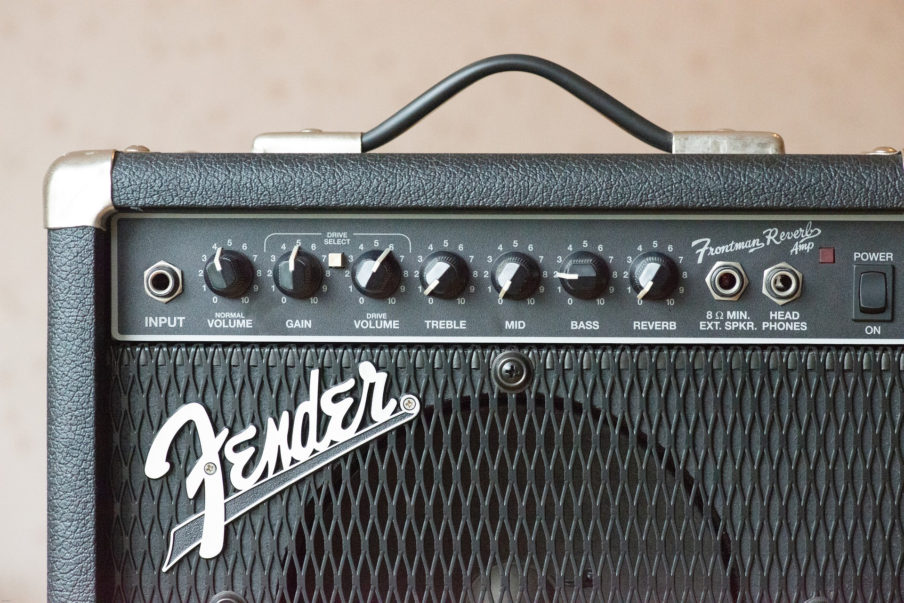
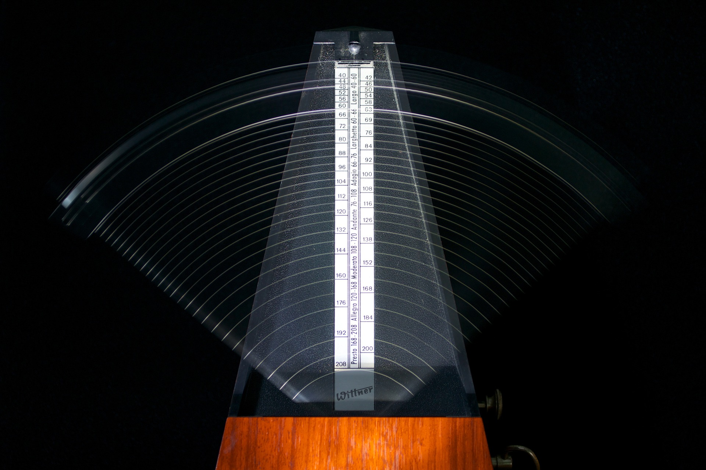
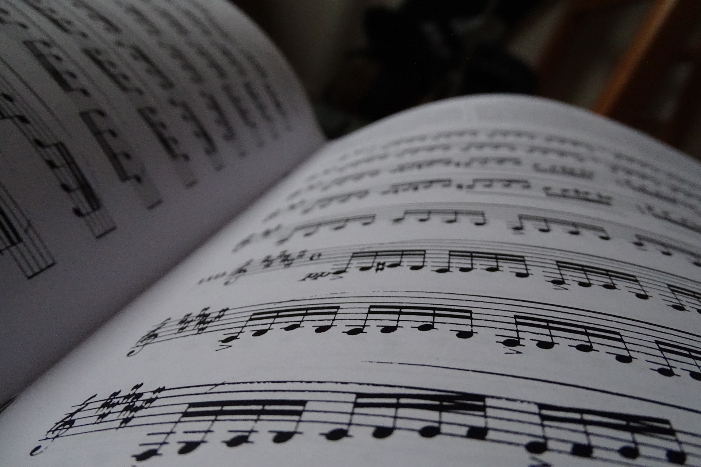
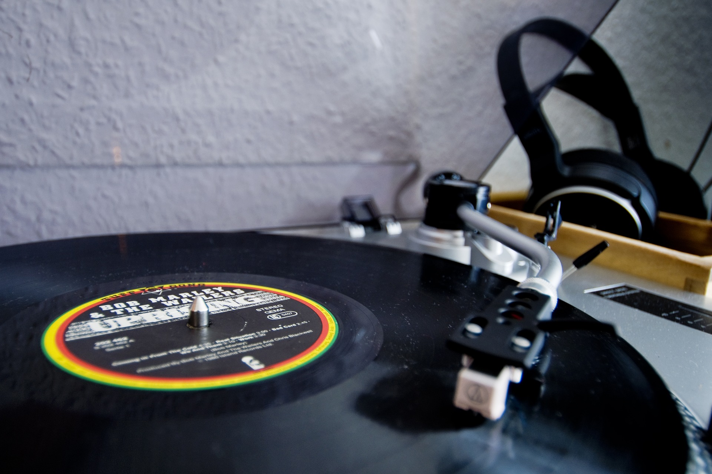

Son
Trouver le son d'ampli parfait pour jouer ses morceaux.


Rythme
Le ménétronome pour garder le rythme.

Théorie de la musique
Le solfège pour mieux connaître l'instrument.

Playback
Jouer par dessus les morceaux pour se perfectionner.